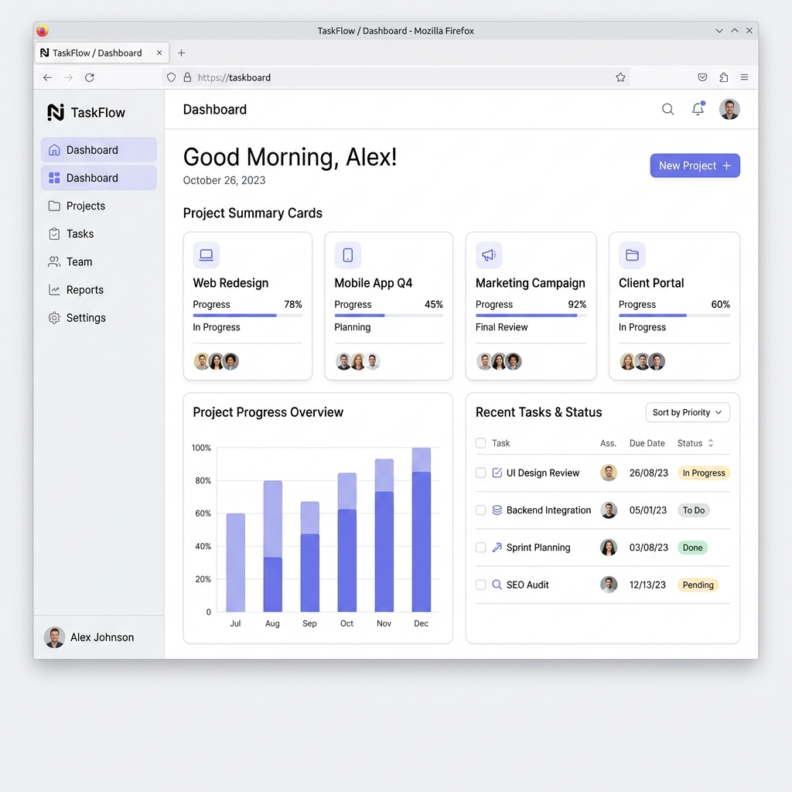
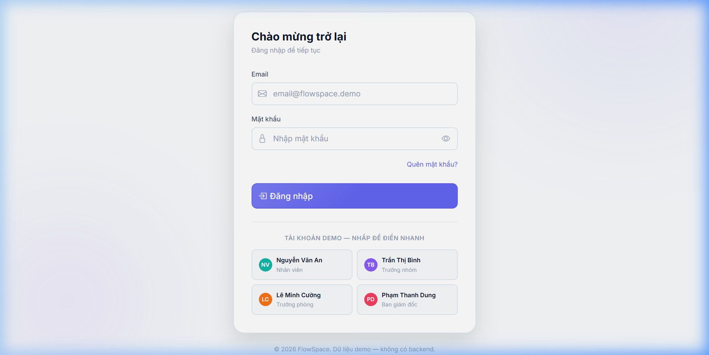
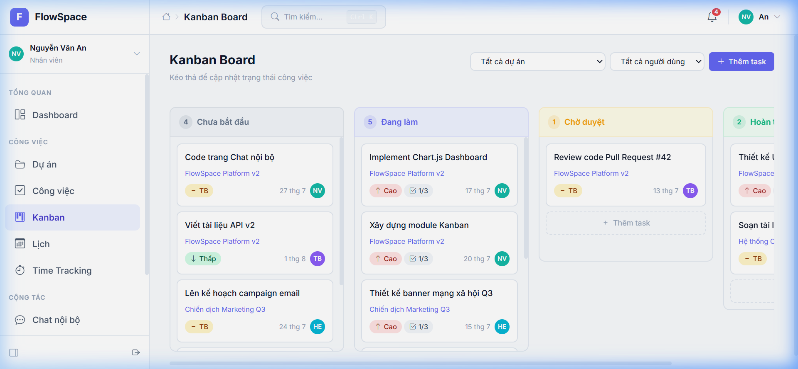
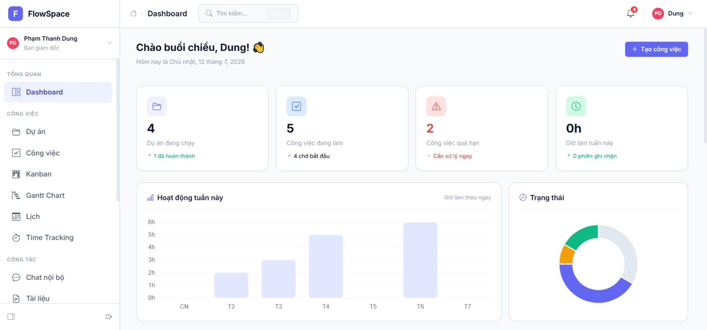

Kết hợp quản lý dự án, Kanban, Gantt, Lịch, Chat nội bộ và Tài liệu nhóm trong một giao diện duy nhất. Lấy cảm hứng từ Notion giúp đội ngũ của bạn tập trung làm việc, bớt họp hành.

Không còn phải chuyển đổi tab liên tục giữa nhiều công cụ rời rạc. FlowSpace mang lại trải nghiệm hợp nhất hoàn hảo.
Theo dõi toàn diện các dự án đang chạy với thanh phần trăm tiến độ cập nhật tự động dựa trên số lượng công việc hoàn thành.
Quản lý trực quan với SortableJS. Kéo thả các thẻ công việc qua 4 cột trạng thái: Chưa bắt đầu, Đang làm, Chờ duyệt, Hoàn thành.
Xem tổng quan lịch trình, mối liên quan thời gian giữa các dự án và đầu việc cụ thể trên một dòng thời gian trực quan.
Tích hợp FullCalendar hiển thị tất cả hạn công việc và các cuộc họp nội bộ quan trọng của nhóm trong giao diện lịch tháng/tuần/ngày.
Trao đổi trực tiếp ngay trong ứng dụng với các kênh thảo luận chung (#general, #dev-team) hoặc nhắn tin riêng (Direct Messages).
Lưu trữ các ghi chú cuộc họp, quy trình làm việc chung (SOP) với cấu trúc cây thư mục phân cấp rõ ràng chuẩn Notion.
Từ lập kế hoạch đến thực thi, mọi hành động của bạn đều được đồng bộ hóa tức thì.
Đăng nhập nhanh với các tài khoản Demo được phân quyền sẵn: Employee, TeamLead, Manager, Director. Thử nghiệm ngay các tính năng đặc thù cho từng vai trò.
Đi tới trang Đăng nhập
Theo dõi trạng thái công việc của từng thành viên qua bảng Kanban trực quan. Kéo thả thẻ để cập nhật trạng thái tức thời và đồng bộ với cả đội ngũ.
Trải nghiệm Kanban
Cung cấp cái nhìn toàn cảnh về hiệu suất làm việc của dự án, tổng thời gian ghi nhận (Time Log) và tiến độ chung của toàn công ty theo thời gian thực.
Xem Dashboard Demo
"Sự phức tạp làm tiêu hao năng lượng. Sự tối giản tạo ra sự tập trung và dòng chảy (Flow) công việc tối thượng."